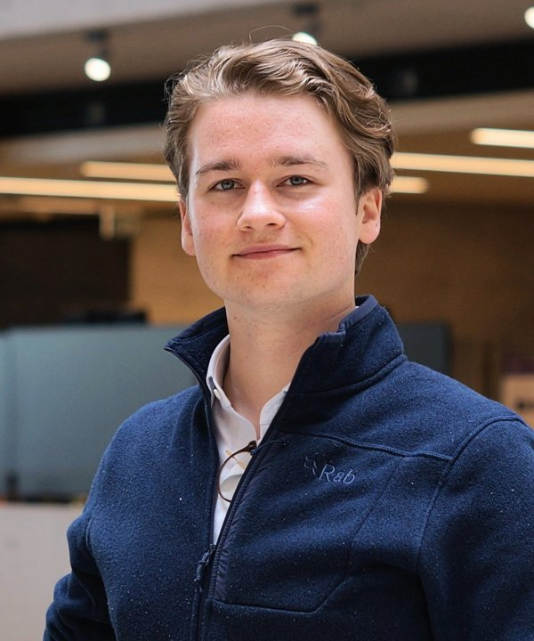

Multiscale connectomics & synchrotron imaging of neural circuits
PhD Researcher · UCL Hawkes Institue · NIH CONNECTS

I'm an interdisciplinary researcher working at the interface of computational neurosciences, synchrotron imaging, and medicine.
My PhD focuses on multiscale reconstruction of neural circuits, combining synchrotron imaging (HiP-CT at ESRF), graph-based methods, and high-performance computing to model structure and organisation in human brain tissue. This work sits within the x-ray microscopy group at the NIH CONNECTS Centre for Large-Scale Imaging of Neural Circuits.
I hold a an iBSc in Medical Physics and Biomedical Engineering from UCL, where I graduated with First Class Honours and a Dean's List Prize. I am completing my PhD on research sabbatical from medicine (MBChB, University of Dundee).
Synchrotron imaging, computational neuroscience, molecular biology, and translational clinical research
Applying cutting-edge synchrotron imaging (HiP-CT) and graph theory analysis to scale up mapping of neural networks within the NIH CONNECTS Centre. Developing the BRIDGE neuroimaging pipeline — open-source, GPU-accelerated tools for reconstructing and analysing fibre networks across spatial scales.
Developed zarr-vectors-py, a python toolkit implementing the Zarr Vectors specification to support handling of large-scale streamline, graph, and mesh data.
Open AI-ready MRI dataset supporting real-time neurosurgical guidance through manual segmentation and large-scale data management.
Modelling normative paediatric neurodevelopment using volumetric ML segmentation, with a focus on deviations associated with focal epilepsy syndromes.
CRISPR-engineered models for targeted degradation of HRI in mitophagy and Parkinson's Disease at the MRC Protein Phosphorylation and Ubiquitaltion Unit.
Led development of cellular models for sonodynamic therapy (focused ultrasound) in glioblastoma. Published in Scientific Reports.
Co-developed the Digital Cullen Chart (app-based visual field assessment). National audit on imaging intervals in glioblastoma. AR brain tumour visualisation.
BioRvix (Pre-Print)
DOI →BioRvix (Pre-Print)
DOI →Scientific Data 12, 80–5
DOI →Science Advances 11, eadn2528
DOI →British Journal of Neurosurgery 38, 1470–1474
DOI →Scientific Reports 13, 20215
DOI →The Surgeon 21, e352–e360
DOI →Health Sciences Review 4, 100048
DOI →Brain and Spine 3, 102127
DOI →2026 — Interdisciplinary training in multi-scale modelling of complex human systems using AI and in-vitro models.
2024–2025 — Competitive scheme building engagement and leadership skills at the intersection of healthcare and engineering.
2024 — UCL Department of Medical Physics and Biomedical Engineering for outstanding academic achievement.
2022 — British Neurosurgical Trainees Association at the ASiT Conference, Aberdeen.
2022 — International programme in Bangalore, India focused on healthcare access and sustainability.
2021–2022 — £1,500 to develop and CE-mark an app-based visual field assessment tool.
MSc Biomaterials & Tissue Engineering, UCL Mechanical Engineering. Tutorials on imaging fundamentals, X-ray/CT, ultrasound, MRI, and nuclear medicine to a cohort of 40 students.
MSc Physics and Engineering in Medicine, UCL Medical Physics & Biomedical Engineering. X-ray imaging and radiation protection for a cohort of 90 students.
Gradient-Derived Characterisation of White Matter in Hierarchical Networks in Synchrotron Imaging
Gradient-Derived Characterisation of White Matter in Hierarchical Networks
Gradient-Derived Characterisation of White Matter in Hierarchical Networks
Efficacy of Dopamine Agonists in Giant Prolactinoma
Optimising Sonodynamic Therapy in Malignant Glioma
Gradient-Derived Characterisation of White Matter in Hierarchical Networks
The Digital Cullen Chart
Emotional visual stimuli and simulated laparoscopic surgical performance
I'm always happy to discuss potential collaborations, particularly around connectomics, synchrotron imaging, or graph-based methods for neuroanatomy.